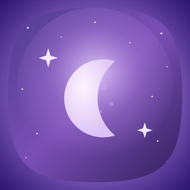
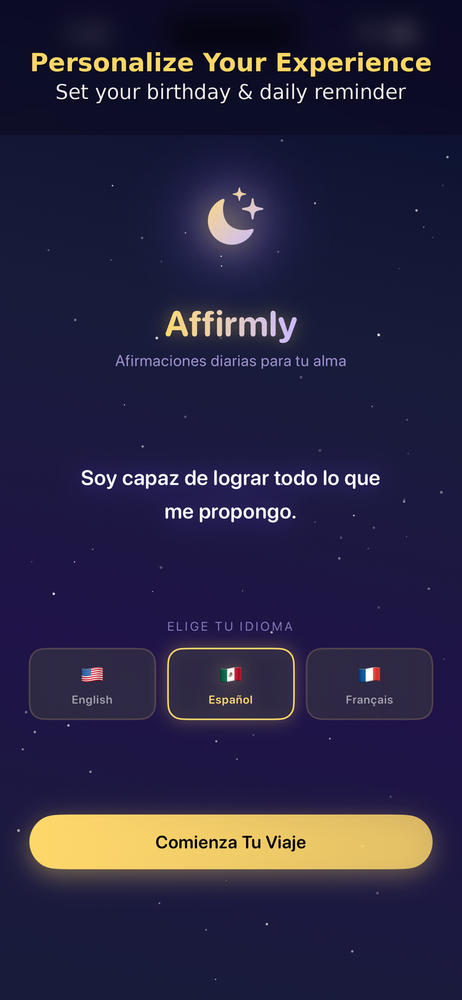
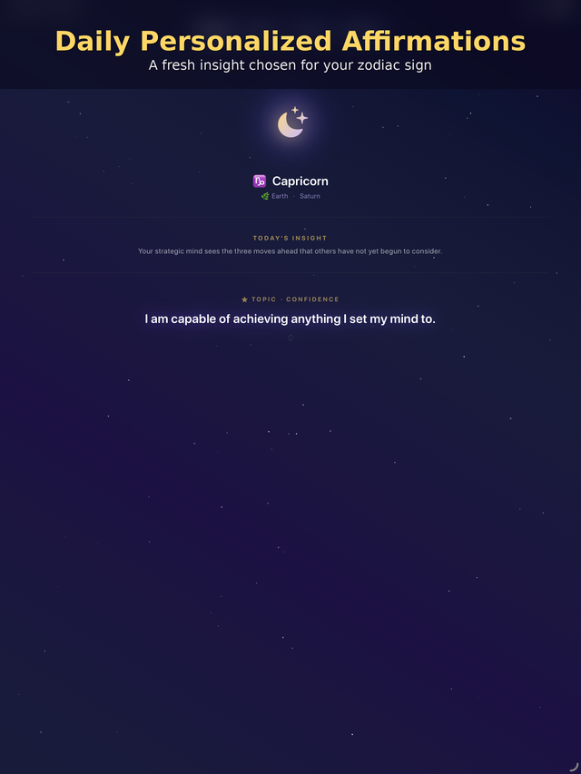
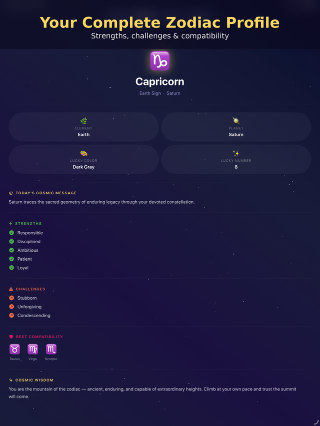
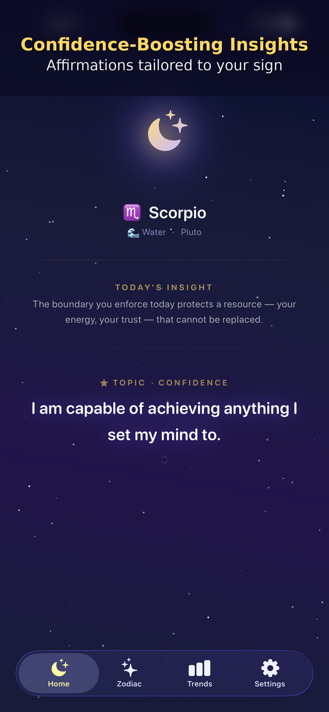
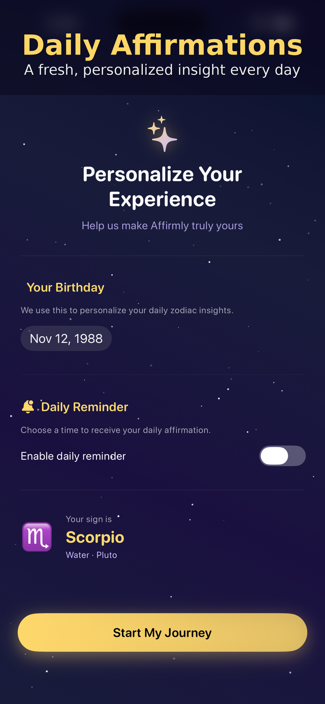
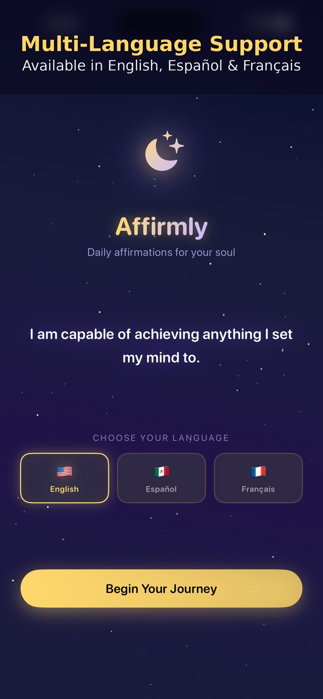

<title>Affirmly</title>
<style>
  /*
    Layout concept: the app's own night-sky screen, extended into a page —
    same navy-purple glass, same gold, same rounded warmth, real captures.
  */
  :root{
    --bg-top: #120A2E;
    --bg-bottom: #0A0618;
    --glow: #4A2E8C;
    --surface: rgba(255,255,255,0.055);
    --surface-border: rgba(255,255,255,0.13);
    --ink: #FFFFFF;
    --ink-soft: rgba(255,255,255,0.68);
    --ink-faint: rgba(255,255,255,0.42);
    --gold: #F0C15C;
    --lavender: #C7B8F0;
    color-scheme: dark;
  }

  *{ box-sizing: border-box; }
  body{
    background:
      radial-gradient(620px 420px at 50% -8%, var(--glow) 0%, transparent 65%),
      linear-gradient(180deg, var(--bg-top), var(--bg-bottom));
    background-attachment: fixed;
    color: var(--ink);
    font-family: "Nunito", "Helvetica Neue", Arial, sans-serif;
    line-height: 1.6;
  }
  /* sparse stars */
  body::before{
    content:"";
    position: fixed; inset: 0;
    pointer-events: none;
    background-image:
      radial-gradient(1.6px 1.6px at 12% 18%, rgba(255,255,255,0.7), transparent),
      radial-gradient(1.4px 1.4px at 82% 12%, rgba(255,255,255,0.55), transparent),
      radial-gradient(1.8px 1.8px at 68% 30%, rgba(255,255,255,0.6), transparent),
      radial-gradient(1.3px 1.3px at 25% 45%, rgba(255,255,255,0.45), transparent),
      radial-gradient(1.5px 1.5px at 90% 55%, rgba(255,255,255,0.5), transparent),
      radial-gradient(1.4px 1.4px at 8% 70%, rgba(255,255,255,0.4), transparent),
      radial-gradient(1.7px 1.7px at 55% 8%, rgba(255,255,255,0.55), transparent),
      radial-gradient(1.3px 1.3px at 40% 85%, rgba(255,255,255,0.4), transparent);
    z-index: 0;
  }
  main, header, footer{ position: relative; z-index: 1; }

  h1,h2,h3,.display{
    font-family: "Quicksand", "Nunito", sans-serif;
    font-weight: 700;
    text-wrap: balance;
  }
  .label{
    font-family: "Quicksand", sans-serif;
    font-weight: 600;
    font-size: 0.72rem;
    letter-spacing: 0.12em;
    text-transform: uppercase;
    color: var(--gold);
    opacity: 0.85;
  }

  .wrap{ max-width: 720px; margin: 0 auto; padding-inline: 22px; }
  ::selection{ background: var(--gold); color: #241708; }

  .divider{ height: 0.5px; background: rgba(240,193,92,0.16); border: none; margin: 0; }

  /* ---------- Header ---------- */
  header.top{ padding-block: 22px 6px; }
  .top-row{ display:flex; align-items:center; justify-content:space-between; gap: 12px; flex-wrap: wrap; }
  .wordmark{ display:flex; align-items:center; gap: 9px; font-family:"Quicksand", sans-serif; font-weight: 700; font-size: 1.05rem; }
  .wordmark img{ width: 24px; height: 24px; border-radius: 7px; display:block; }
  .top-links{ display:flex; gap: 20px; }
  .top-links a{
    font-family:"Quicksand", sans-serif;
    font-size: 0.78rem; font-weight: 600;
    color: var(--ink-soft); text-decoration:none;
  }
  .top-links a:hover{ color: var(--gold); }

  /* ---------- Hero ---------- */
  .hero{ padding-block: 46px 30px; text-align:center; }
  .moon-badge{
    width: 62px; height: 62px; margin: 0 auto 18px;
    border-radius: 16px;
    overflow: hidden;
    box-shadow: 0 0 34px rgba(240,193,92,0.35);
  }
  .moon-badge img{ width: 100%; height: 100%; display:block; }
  .hero h1{
    font-size: clamp(2.6rem, 10vw, 3.6rem);
    margin: 0 0 8px;
    background: linear-gradient(100deg, var(--gold), var(--lavender));
    -webkit-background-clip: text; background-clip: text; color: transparent;
  }
  .hero .tagline{
    font-size: 1.02rem;
    color: var(--lavender);
    opacity: 0.85;
    margin: 0 0 26px;
  }
  .pill-tag{
    display:inline-flex; align-items:center; gap: 8px;
    font-family:"Quicksand", sans-serif;
    font-size: 0.7rem; font-weight: 600; letter-spacing: 0.06em; text-transform: uppercase;
    color: var(--gold);
    border: 1px solid rgba(240,193,92,0.4);
    border-radius: 999px;
    padding: 7px 16px;
    margin-bottom: 26px;
  }
  .pill-tag .dot{ width: 5px; height: 5px; border-radius: 50%; background: var(--gold); display:inline-block; }

  .fact-row{
    display:flex; justify-content:center; flex-wrap: wrap;
    gap: 8px;
  }
  .fact{
    font-family:"Quicksand", sans-serif;
    font-size: 0.72rem; font-weight: 600;
    color: var(--ink-soft);
    background: var(--surface);
    border: 1px solid var(--surface-border);
    border-radius: 999px;
    padding: 6px 13px;
  }

  /* ---------- Stat pills ---------- */
  .stats{
    display:grid; grid-template-columns: repeat(4, 1fr);
    gap: 10px;
    margin-block: 34px 44px;
  }
  .stat{
    background: var(--surface);
    border: 1px solid var(--surface-border);
    border-radius: 18px;
    padding: 16px 6px;
    text-align:center;
  }
  .stat .n{
    font-family:"Quicksand", sans-serif;
    font-weight: 700;
    font-size: 1.3rem;
    color: var(--gold);
    display:block;
  }
  .stat .l{
    font-size: 0.62rem;
    letter-spacing: 0.02em;
    text-transform: uppercase;
    color: var(--ink-faint);
  }
  @media (max-width: 480px){ .stats{ grid-template-columns: repeat(2,1fr); } }

  /* ---------- Sections ---------- */
  section{ padding-block: 34px; }
  .section-label{ display:flex; align-items:center; gap: 9px; margin-bottom: 6px; }
  .section-label svg{ width: 15px; height: 15px; flex-shrink: 0; }
  section > .divider{ margin-bottom: 24px; }
  .lede{ color: var(--ink-soft); font-size: 1rem; max-width: 56ch; }
  .lede b{ color: var(--ink); font-weight: 700; }

  /* ---------- Glass cards / captures ---------- */
  .plates{ display:grid; grid-template-columns: repeat(3,1fr); gap: 16px; }
  .plate-card{
    background: var(--surface);
    border: 1px solid var(--surface-border);
    border-radius: 16px;
    padding: 6px;
  }
  .plate-card img{ display:block; width: 100%; height: auto; border-radius: 11px; }
  .plate-cap{
    font-family:"Quicksand", sans-serif;
    font-size: 0.66rem; font-weight: 600;
    color: var(--ink-faint);
    text-align:center;
    margin-top: 8px;
  }
  @media (max-width: 560px){ .plates{ grid-template-columns: repeat(2,1fr); } }

  .demo-wrap{ display:flex; justify-content:center; }
  .demo-card{
    background: var(--surface);
    border: 1px solid var(--surface-border);
    border-radius: 20px;
    padding: 8px;
    max-width: 260px; width: 100%;
  }
  .demo-card video{ display:block; width: 100%; border-radius: 14px; }
  .demo-cap{ text-align:center; font-family:"Quicksand",sans-serif; font-size: 0.68rem; font-weight: 600; color: var(--ink-faint); margin-top: 10px; }

  /* ---------- Tab cards (what's inside) ---------- */
  .tabcards{ display:flex; flex-direction: column; gap: 12px; }
  .tabcard{
    background: var(--surface);
    border: 1px solid var(--surface-border);
    border-radius: 18px;
    padding: 18px 20px;
    display:flex; gap: 14px; align-items:flex-start;
  }
  .tabcard .glyph{
    width: 34px; height: 34px; border-radius: 10px;
    background: rgba(240,193,92,0.12);
    display:flex; align-items:center; justify-content:center;
    font-size: 1.05rem; color: var(--gold);
    flex-shrink: 0;
  }
  .tabcard h3{ font-size: 1rem; margin: 0 0 4px; }
  .tabcard p{ margin: 0; color: var(--ink-soft); font-size: 0.92rem; }

  /* ---------- Sign pills ---------- */
  .sign-row{ display:flex; flex-wrap: wrap; gap: 8px; }
  .sign-pill{
    display:flex; align-items:center; gap: 6px;
    background: var(--surface);
    border: 1px solid var(--surface-border);
    border-radius: 999px;
    padding: 7px 13px 7px 10px;
  }
  .sign-pill .sym{ color: var(--gold); font-size: 0.95rem; }
  .sign-pill .name{ font-family:"Quicksand", sans-serif; font-size: 0.72rem; font-weight: 600; color: var(--ink-soft); }

  /* ---------- Build note ---------- */
  .build-card{
    background: var(--surface);
    border: 1px solid var(--surface-border);
    border-radius: 20px;
    padding: 24px 24px 22px;
  }
  .build-card p{ margin: 0 0 12px; color: var(--ink-soft); font-size: 0.96rem; }
  .build-card p:last-of-type{ margin-bottom: 0; }
  .build-card .signoff{
    font-family:"Quicksand", sans-serif;
    font-size: 0.7rem; font-weight: 600;
    color: var(--ink-faint);
    margin-top: 16px;
    letter-spacing: 0.02em;
  }

  /* ---------- Footer ---------- */
  footer{ padding-block: 30px 44px; }
  .foot-links{ display:flex; gap: 12px; flex-wrap: wrap; justify-content:center; margin-bottom: 16px; }
  .btn-gold{
    font-family:"Quicksand", sans-serif;
    font-weight: 700; font-size: 0.85rem;
    color: #241708;
    background: linear-gradient(100deg, var(--gold), #E8AE4A);
    border-radius: 999px;
    padding: 12px 24px;
    text-decoration:none;
    display:inline-block;
    box-shadow: 0 0 22px rgba(240,193,92,0.25);
  }
  .btn-ghost{
    font-family:"Quicksand", sans-serif;
    font-weight: 700; font-size: 0.85rem;
    color: var(--ink);
    background: var(--surface);
    border: 1px solid var(--surface-border);
    border-radius: 999px;
    padding: 12px 24px;
    text-decoration:none;
    display:inline-block;
  }
  .foot-note{ text-align:center; font-family:"Quicksand",sans-serif; font-size: 0.68rem; color: var(--ink-faint); }
</style>
<link rel="preconnect" href="https://fonts.googleapis.com">
<link rel="preconnect" href="https://fonts.gstatic.com" crossorigin>
<link href="https://fonts.googleapis.com/css2?family=Quicksand:wght@500;600;700&family=Nunito:wght@400;600;700&display=swap" rel="stylesheet">

<header class="top">
  <div class="wrap top-row">
    <span class="wordmark">Affirmly</span>
    <nav class="top-links">
      <a href="#build">Behind the build</a>
      <a href="#links">Links</a>
    </nav>
  </div>
</header>

<main class="wrap">

  <section class="hero">
    <div class="moon-badge"></div>
    <h1>Affirmly</h1>
    <p class="tagline">Your emotional ecosystem.</p>
    <div class="pill-tag"><span class="dot"></span>Portfolio case study</div>
    <div class="fact-row">
      <span class="fact">iOS 17+</span>
      <span class="fact">SwiftUI</span>
      <span class="fact">SwiftData</span>
      <span class="fact">EN &middot; ES &middot; FR</span>
    </div>
  </section>

  <div class="stats">
    <div class="stat"><span class="n">7</span><span class="l">Moods</span></div>
    <div class="stat"><span class="n">12</span><span class="l">Signs</span></div>
    <div class="stat"><span class="n">3</span><span class="l">Languages</span></div>
    <div class="stat"><span class="n">1</span><span class="l">Widget</span></div>
  </div>

  <section id="idea">
    <div class="section-label">&#9789;&nbsp;<span class="label">The idea</span></div>
    <hr class="divider">
    <p class="lede">Most affirmation apps show everyone the same rotating quotes. Affirmly ties what it shows you to <b>how you say you're feeling</b> and <b>the zodiac profile you were born into</b>. Neither one overrides the other &mdash; together they shape the coaching, the daily line, and the tone of the day.</p>
  </section>

  <section id="plates">
    <div class="section-label">&#10022;&nbsp;<span class="label">Captures</span></div>
    <hr class="divider">
    <div class="plates">
      <div>
        <div class="plate-card"></div>
        <div class="plate-cap">Onboarding</div>
      </div>
      <div>
        <div class="plate-card"></div>
        <div class="plate-cap">Daily insight</div>
      </div>
      <div>
        <div class="plate-card"></div>
        <div class="plate-cap">Zodiac profile</div>
      </div>
      <div>
        <div class="plate-card"></div>
        <div class="plate-cap">Mood trends</div>
      </div>
      <div>
        <div class="plate-card"></div>
        <div class="plate-cap">Strengths &amp; matches</div>
      </div>
      <div>
        <div class="plate-card"></div>
        <div class="plate-cap">Trilingual</div>
      </div>
    </div>
  </section>

  <section id="demo">
    <div class="section-label">&#9654;&nbsp;<span class="label">In motion</span></div>
    <hr class="divider">
    <div class="demo-wrap">
      <div>
        <div class="demo-card"><video src="shots/demo.mp4" autoplay controls playsinline muted loop preload="auto"></video></div>
        <div class="demo-cap">A short walkthrough, captured on device</div>
      </div>
    </div>
  </section>

  <section id="inside">
    <div class="section-label">&#9788;&nbsp;<span class="label">What's inside</span></div>
    <hr class="divider">
    <div class="tabcards">
      <div class="tabcard">
        <div class="glyph">&#9789;</div>
        <div>
          <h3>Home</h3>
          <p>Today's zodiac insight and a swipeable affirmation, chosen fresh each day for your sign.</p>
        </div>
      </div>
      <div class="tabcard">
        <div class="glyph">&#10022;</div>
        <div>
          <h3>Zodiac</h3>
          <p>A full profile for your sign: element, ruling planet, lucky color and number, closest matches, strengths and challenges.</p>
        </div>
      </div>
      <div class="tabcard">
        <div class="glyph">&#9776;</div>
        <div>
          <h3>Trends</h3>
          <p>Log your mood once a day from seven states. Affirmly watches the pattern and coaches you differently for a bad week than a bad day.</p>
        </div>
      </div>
      <div class="tabcard">
        <div class="glyph">&#9881;</div>
        <div>
          <h3>Settings</h3>
          <p>Switch between English, Spanish, and French at any time, set your birthday, and choose when your daily reminder arrives.</p>
        </div>
      </div>
    </div>
  </section>

  <section id="zodiac">
    <div class="section-label">&#9737;&nbsp;<span class="label">The twelve signs</span></div>
    <hr class="divider">
    <div class="sign-row">
      <span class="sign-pill"><span class="sym">&#9800;</span><span class="name">Aries</span></span>
      <span class="sign-pill"><span class="sym">&#9801;</span><span class="name">Taurus</span></span>
      <span class="sign-pill"><span class="sym">&#9802;</span><span class="name">Gemini</span></span>
      <span class="sign-pill"><span class="sym">&#9803;</span><span class="name">Cancer</span></span>
      <span class="sign-pill"><span class="sym">&#9804;</span><span class="name">Leo</span></span>
      <span class="sign-pill"><span class="sym">&#9805;</span><span class="name">Virgo</span></span>
      <span class="sign-pill"><span class="sym">&#9806;</span><span class="name">Libra</span></span>
      <span class="sign-pill"><span class="sym">&#9807;</span><span class="name">Scorpio</span></span>
      <span class="sign-pill"><span class="sym">&#9808;</span><span class="name">Sagittarius</span></span>
      <span class="sign-pill"><span class="sym">&#9809;</span><span class="name">Capricorn</span></span>
      <span class="sign-pill"><span class="sym">&#9810;</span><span class="name">Aquarius</span></span>
      <span class="sign-pill"><span class="sym">&#9811;</span><span class="name">Pisces</span></span>
    </div>
  </section>

  <section id="build">
    <div class="section-label">&#9993;&nbsp;<span class="label">Behind the build</span></div>
    <hr class="divider">
    <div class="build-card">
      <p>Affirmly was designed and built solo, using SwiftUI for the interface and SwiftData to store mood history on-device. I used AI coding assistance throughout the build and treated it like a pairing partner rather than an author: reviewing every screen, rewriting what didn't fit, and keeping the mood-coaching logic and zodiac content grounded in my own decisions.</p>
      <p>The project currently lives here as a portfolio piece rather than a live App Store listing.</p>
      <div class="signoff">Built by Carlos Perez &middot; SwiftUI &middot; SwiftData &middot; WidgetKit</div>
    </div>
  </section>

</main>

<footer>
  <div class="wrap">
    <div class="foot-note">A small iOS app, built with care</div>
  </div>
</footer>
